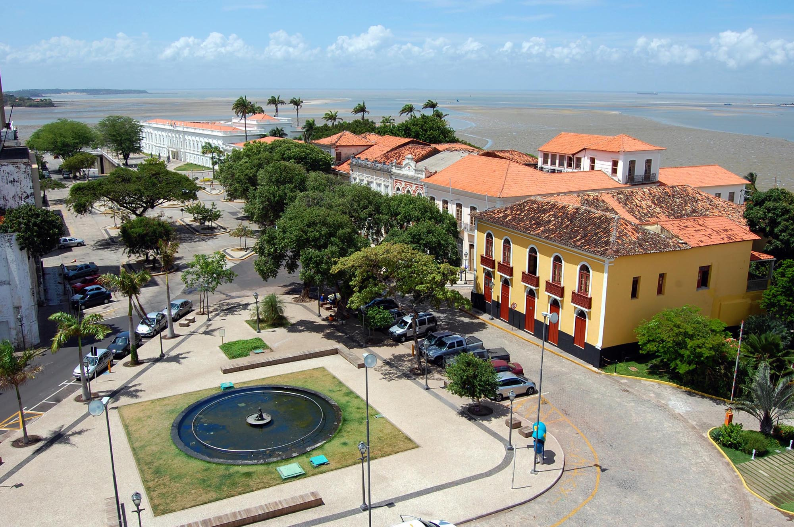

Seja bem vindo ao estado do Maranhao
O Maranhão é um estado fascinante localizado na região Nordeste do Brasil, conhecido por sua rica cultura, história e belezas naturais. A capital, São Luís, é famosa por seu centro histórico colonial, com ruas de paralelepípedos, arquitetura portuguesa e um ambiente cheio de charme. O Maranhão também é lar do Parque Nacional dos Lençóis Maranhenses, um espetáculo da natureza com dunas de areia branca e lagoas de água cristalina que se formam durante a temporada de chuvas — um lugar realmente único no mundo! Além disso, o estado tem uma forte tradição cultural, com festas como o Bumba Meu Bovo, que celebra a cultura popular local com música, dança e cores vibrantes. A culinária maranhense também é deliciosa, com pratos feitos com peixe, camarão e ingredientes típicos da região. O Maranhão é um lugar cheio de história, natureza exuberante e uma cultura muito rica e acolhedora! Se quiser saber mais detalhes, é só pedir!

voltar